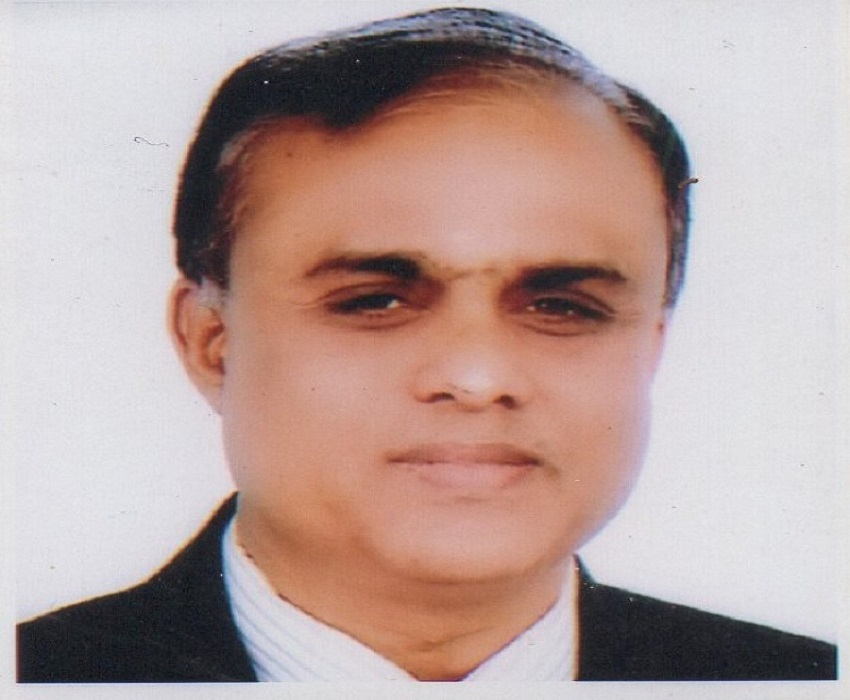

WE TURNS IDEAS INTO REALITY
Islamic University Bangladesh: A profile

Professor Dr. Shaikh Abdus Salam
the 13th Vice Chancellor of the Islamic University, Bangladesh, is a well-known academic with national and international repute.
Dr. Salam was a selection-grade Professor of Mass Communication and Journalism at the University of Dhaka, Bangladesh. Born in Bagerhat (1955) Professor Salam possesses a brilliant academic and research career. In addition to his successful teaching career, Dr. Salam also has rich and diversified administrative and managerial experiences in the governmental and non-governmental, national and international organizations.
Professor Salam completed Bachelor of Arts Degree with honours in Economics from Government B. L. College, Khulna under Rajshahi University in 1975 and stood 2nd in order of merit. He achieved his Master Degree in Economics from the University of Dhaka (1976). Professor Salam earned a Bachelor of Law Degree (1980) and his second Master Degree in Mass Communication and Journalism (1981) from there. He successfully accomplished his PhD Degree in Communication and Journalism (1986) from the University of Poona, India.
Dr. Salam joined the Department of Mass Communication and Journalism at the University of Dhaka in 1987 and became Professor in 1998. He taught Mass Communication and Journalism, carried out researches and supervised PhD students regularly. He was the Former Director of the Centre for Advanced Research in Arts and Social Sciences (CARASS) at Dhaka University. He served as the Adjunct Professor at the National University and East-West University, Bangladesh. Dr. Salam worked as a Visiting Professor at the Oslo University College, Norway (2008) and Lucian Blaga University, Romania (2011). Professor Salam was the Chairman of the Department of Mass Communication and Journalism (2006-2009) and the Dean of the Faculty of Social Sciences (2009) at the University of Dhaka.
Professor Salam served as the Director General of the Press Institute of Bangladesh (1996–2001) and was the Vice-President of the Council Asia-Pacific Press Institute (CAPPI). In 1986, he served as the Director (Programme & IEC) of Bangladesh Association for Voluntary Sterilization (BAVS), Dhaka. In the beginning of his career he served as the Research Officer of the Ministry of Sports, Culture and Religious Affairs, Government of Bangladesh (1980-1983). He also experienced to work with the Terre Des Hommes (Netherlands), Dhaka (1978-1980).
Professor Salam completed several trainings/courses on Project Management (Bangladesh); Financing Family Planning Program (East-West Centre, Hawaii, USA); TOT on Gender & Development (G&DTC, Netherlands); Communicating with Policy Makers About Health (HIV/AIDS) and Population Issues (East-West Centre, Hawaii, USA); International Course on Consulting for Results (Cairo, Egypt) and so on.
Professor Salam has an excellent profile in consultancy also. He worked in research projects as the Adviser with URC (Bangladesh), as a Consultant Member of Partners in Population and Development (PPD) and Mass Line Media (MMC), as Team Leader of the Consultation task for KATALYST/Swiss contact, Dhaka, as Consultant of UNODC, [Under RAS/H-13 Project] and so on. He was the Coordinator of UK-Bangladesh Higher Education Link Programme (2007-2009) [The British Council and Dhaka University], of NOMA partners’ project: A Network of Journalism Schools/Departments of Oslo University College, Norway, Institute of Mass Communication and Journalism, Punjab University, Pakistan, College of Communication and Development Journalism, Kathmandu, Nepal, and the Department of Mass Communication and Journalism, University of Dhaka, Bangladesh (2007-2012). He provided consultancy to develop National HIV/AIDS Advocacy and Communication Strategy by NASP, Bangladesh (2017). Professor Salam worked as the Communication Expert for Platform of Dialogue (P4D) with RDC, Dhaka (British Council Funded Project) too. He was the founder President of the Dhaka University Mass Communication and Journalism Alumni Association (2009-2011). He was a member of the Finance Committee, Dhaka University (2009), a Syndicate Member, Bangladesh University of Business and Technology (2011-2013). He was the Editor of Social Science Review, Dhaka University (2009). Presently, Professor Salam is a Member of Academic Council, Bangladesh Open University, Dhaka (since 2009).
Dr. Salam founded Bangladesh Carom Federation and chaired the post of its first President (1989-2007). He is the Founder President of Bangladesh Cricket Association for the Physically Challenged (BCAPC) and Vice-president of National Paralympic committee, Bangladesh.
Professor Salam has presented papers and participated a number of seminars & workshops home and abroad. He has authored 9 imprtant books. Among them, the ones like Mass media in Bangladesh: Newspaper, Radio and Television, বাংলাদেশের গণমাধ্যম ও সাংবাদিকতা পেশায় আলোকিতজনেরা (Bangladesh media and luminary professionals in journalism), বিজনেস কম্যুনিকেশন (Business Communication), বঙ্গবন্ধু ও ঢাকা বিশ্ববিদ্যালয় (Bangabandhu and the University of Dhaka), বীরাঙ্গনার আত্মকথন (Birangonar Atmakathan) and so on have achieved considerable readership. Besides, he authored 4 manuals, 6 research reports and has about 40 research articles published in journals home and abroad to his credit. He also regularly contributes columns and post-editorials to the recognized journals and national dailies of Bangladesh.